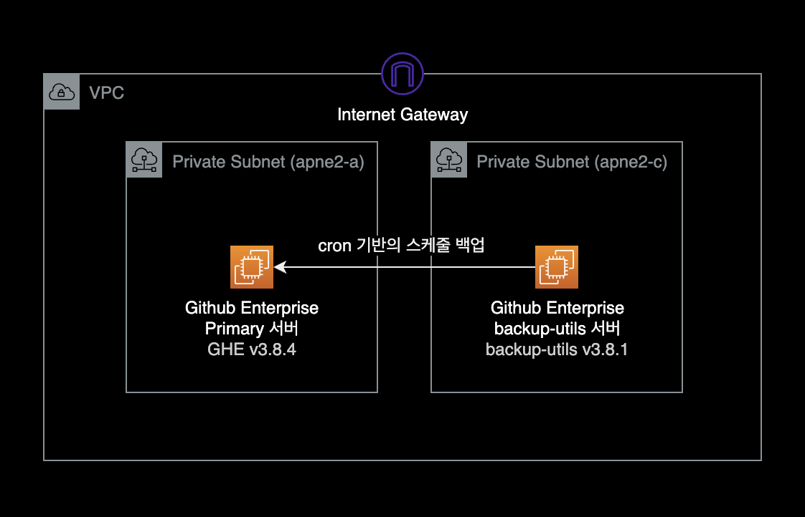
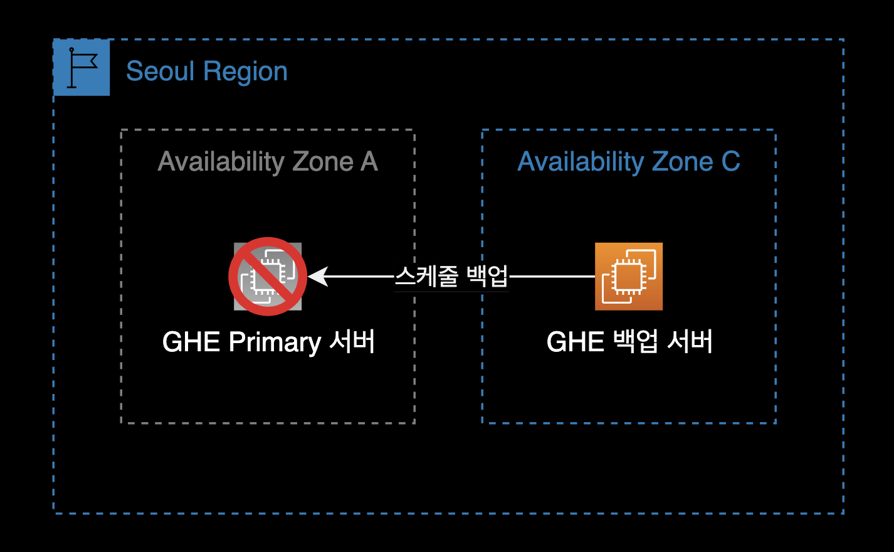
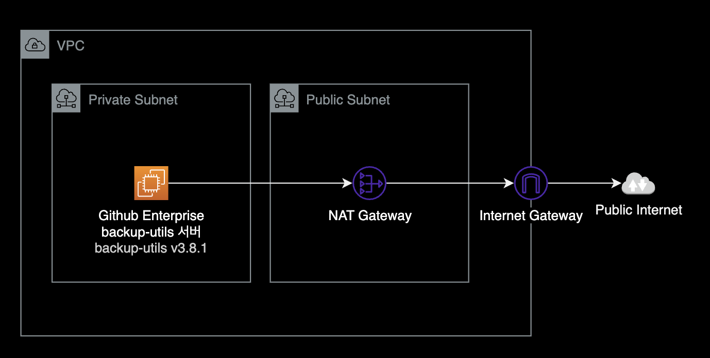
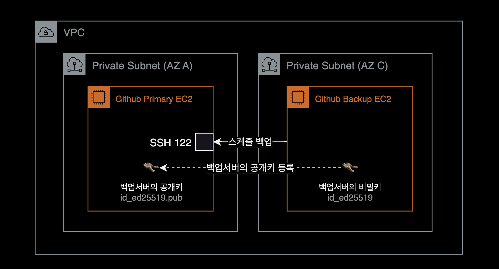
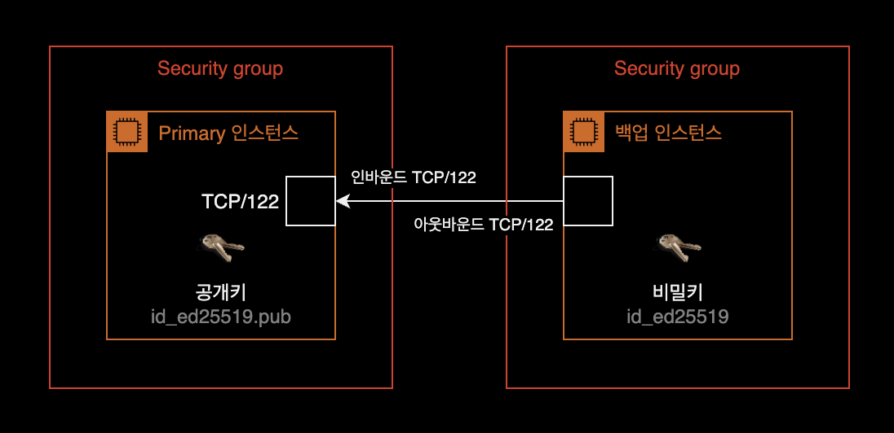
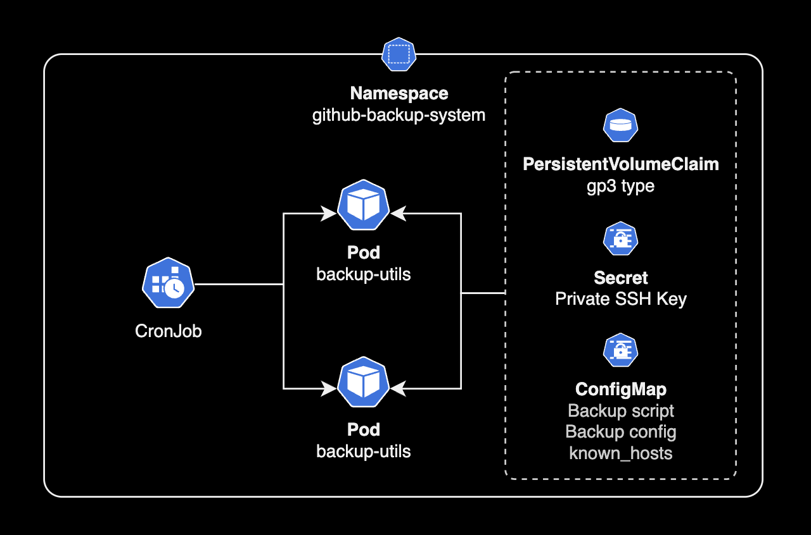

Github Enterprise 백업 인스턴스 구성
개요
Github Enterprise Server v3.8.4에서 Backup 인스턴스(backup-utils) 구축하기
배경지식
github-backup-utils
Github Enterprise Server를 운영할 때 공식적으로 github-backup-utils를 사용해서 백업을 수행해야 합니다.
Github Support 측 공식 답변으로는 GHE 서버의 백업은 AWS Backup의 경우 보조 개념으로 사용하고, github-backup-utils를 메인 백업으로 사용하는 걸 권장한다고 합니다.
이 경우 AWS Backup은 Optional한 선택지이므로 github-backup-utils만 사용해도 무방할 것 같습니다.
환경
Github Enterprise 시스템 구성은 다음과 같습니다.

퍼블릭 클라우드인 AWS를 기반으로 Github Enterprise Server와 백업 서버를 구축한 환경입니다.
Github Enterprise 서버
- OS : Debian 10
- Github Enterprise v3.8.4
- CPU 아키텍처 : x86_64
백업 전용 EC2 인스턴스
- OS : Amazon Linux 2023
- 인스턴스 타입 : t4g.large
- CPU 아키텍처 : ARM64
- 백업 패키지 버전 : backup-utils v3.8.1
설치방법
백업 인스턴스 생성
OS
Github 측에서는 공식적으로 Ubuntu OS를 기준으로 백업 소프트웨어를 테스트 되었으므로 Ubuntu OS를 권장하고 있습니다.
그러나 저는 이번 기회에 Amazon Linux 2023을 써보고 싶어서 백업 서버의 AMI로 Amazon Linux 2023을 선정했습니다.
제 경우 백업 서버의 OS로 Amazon Linux 2023 + ARM64 아키텍처를 사용했는데 운영에 전혀 영향이 없었습니다.
$ cat /etc/os-release
NAME="Amazon Linux"
VERSION="2023"
ID="amzn"
ID_LIKE="fedora"
VERSION_ID="2023"
PLATFORM_ID="platform:al2023"
PRETTY_NAME="Amazon Linux 2023"
ANSI_COLOR="0;33"
CPE_NAME="cpe:2.3:o:amazon:amazon_linux:2023"
HOME_URL="https://aws.amazon.com/linux/"
BUG_REPORT_URL="https://github.com/amazonlinux/amazon-linux-2023"
SUPPORT_END="2028-03-01"
리소스 스펙
CPU 및 메모리 요구 사항은 GitHub Enterprise Server 어플라이언스의 크기에 따라 다릅니다.
GitHub Enterprise Backup Utilities를 실행하는 호스트에는 최소 4개의 코어와 8GB의 RAM이 권장됩니다.
디스크 볼륨
백업 서버에 연결하는 EBS 볼륨 크기는 Primary GHE 서버 볼륨의 최소 5배를 권장하고 있습니다.
$ df -hT
Filesystem Type Size Used Avail Use% Mounted on
devtmpfs devtmpfs 4.0M 0 4.0M 0% /dev
tmpfs tmpfs 3.9G 0 3.9G 0% /dev/shm
tmpfs tmpfs 1.6G 468K 1.6G 1% /run
/dev/nvme0n1p1 xfs 1.5T 13G 1.5T 1% /
tmpfs tmpfs 3.9G 0 3.9G 0% /tmp
tmpfs tmpfs 783M 0 783M 0% /run/user/1000
가용영역 선정
퍼블릭 클라우드 환경에서 Github Enterprise Server를 설치해서 사용하는 경우, 백업서버의 가용영역 선정이 중요합니다.
가용영역 레벨의 장애가 발생할 경우를 대비하기 위해 반드시 Github Enterprise Primary 서버와 다른 가용영역에 배치합니다.

백업 인스턴스에 접속
Github Enterprise 백업 인스턴스에 SSH로 접속합니다.
# SSH access command example
$ ssh -i my-ec2-ssh-key.pem -p 22 -l ec2-user 10.190.33.44
2023년 7월 기준으로 Amazon Linux 2023은 Session Manager를 사용할 수 없고 SSH만 지원합니다.
Amazon Linux 2023 공식문서
필수 유틸리티
백업 서버에 git을 설치합니다. 백업 수행에 필요한 유틸리티입니다.
$ sudo yum install -y git
백업 서버에 설치가 필요한 패키지는 다음과 같습니다.
Amazon Linux 2023 기준으로 대부분이 이미 설치되어 있지만 git과 cronie는 별도 설치가 필요했습니다.
| 기능 구분 | 설치가 필요한 패키지 |
|---|---|
| 일반 | bash, git, ssh, rsync, jq |
| 병렬 백업 및 복구 | GNU awk, moreutils |
자세한 사항은 공식문서 Backup host requirements를 참고하세요.
github-backup-utils 패키지 설치
github-backup-utils v3.8.1 패키지를 /opt/ 밑에 다운로드 받습니다.
$ wget https://github.com/github/backup-utils/releases/download/v3.8.1/github-backup-utils-v3.8.1.tar.gz \
-O /opt/github-backup-utils-v3.8.1.tar.gz
위 명령어가 실행되기 위해서 백업서버가 NAT Gateway를 경유해서 인터넷 아웃바운드 가능한 네트워크 환경이어야 합니다.

인터넷 아웃바운드의 필요 시점
패키지 다운로드 작업이 완료된 이후부터는 인터넷 아웃바운드가 필요 없습니다.
백업 서버의 보안그룹에서 인터넷으로 나가는 아웃바운드 룰을 삭제해도 백업 수행에 영향이 없습니다.
--2023-06-16 00:47:24-- https://github.com/github/backup-utils/releases/download/v3.8.1/github-backup-utils-v3.8.1.tar.gz
Resolving github.com (github.com)... 20.200.245.247
Connecting to github.com (github.com)|20.200.245.247|:443... connected.
HTTP request sent, awaiting response... 302 Found
...
Resolving objects.githubusercontent.com (objects.githubusercontent.com)... 185.199.110.133, 185.199.111.133, 185.199.108.133, ...
Connecting to objects.githubusercontent.com (objects.githubusercontent.com)|185.199.110.133|:443... connected.
HTTP request sent, awaiting response... cd200 OK
Length: 117155 (114K) [application/octet-stream]
Saving to: ‘/opt/github-backup-utils-v3.8.1.tar.gz’
/opt/github-backup-utils-v3.8.1.t 100%[==========================================================>] 114.41K --.-KB/s in 0.009s
2023-06-16 00:47:25 (12.9 MB/s) - ‘/opt/github-backup-utils-v3.8.1.tar.gz’ saved [117155/117155]
정상적으로 패키지를 다운로드 받았습니다.
현재 /opt/ 밑에 GHE backup util v3.8.1 설치파일을 다운로드 받았습니다.
$ cd /opt/
$ ls -lh
total 132K
drwxr-xr-x. 4 root root 33 Jun 9 20:43 aws
-rw-r--r--. 1 root root 115K Jun 14 22:00 github-backup-utils-v3.8.1.tar.gz
다운로드 받은 github-backup-utils-v3.8.1.tar.gz 파일을 압축 해제합니다.
$ tar -xzvf /opt/github-backup-utils-v3.8.1.tar.gz
github-backup-utils-v3.8.1/
github-backup-utils-v3.8.1/.dockerignore
github-backup-utils-v3.8.1/.github/
github-backup-utils-v3.8.1/.github/dependabot.yml
github-backup-utils-v3.8.1/.github/workflows/
github-backup-utils-v3.8.1/.github/workflows/docker-image.yml
...
github-backup-utils-v3.8.1/test/testlib.sh
Github Enterprise 백업 유틸리티에서 기본적으로 인식할 수 있도록 디렉토리 이름을 backup-utils로 변경합니다.
$ mv github-backup-utils-v3.8.1 backup-utils
백업 설정파일 작성
샘플 백업 설정파일 /opt/backup-utils/backup.config-example을 확인합니다.
예제 설정파일 원본은 Github에서 확인할 수 있습니다.
$ cat backup.config-example
# GitHub Enterprise Server backup configuration file
# The hostname of the GitHub Enterprise Server appliance to back up. The host
# must be reachable via SSH from the backup host.
GHE_HOSTNAME="github.example.com"
# Path to where backup data is stored. By default this is the "data"
# directory next to this file but can be set to an absolute path
# elsewhere for backing up to a separate partition / mount point.
GHE_DATA_DIR="data"
# The number of backup snapshots to retain. Old snapshots are pruned after each
# successful ghe-backup run. This option should be tuned based on the frequency
# of scheduled backup runs. If backups are scheduled hourly, snapshots will be
# available for the past N hours; if backups are scheduled daily, snapshots will
# be available for the past N days ...
GHE_NUM_SNAPSHOTS=10
# The hostname of the GitHub appliance to restore. If you've set up a separate
# GitHub appliance to act as a standby for recovery, specify its IP or hostname
# here. The host to restore to may also be specified directly when running
# ghe-restore so use of this variable isn't strictly required.
#
#GHE_RESTORE_HOST="github-standby.example.com"
# If set to 'yes', ghe-restore will omit the restore of audit logs.
#
#GHE_RESTORE_SKIP_AUDIT_LOGS=no
# When verbose output is enabled with `-v`, it's written to stdout by default. If
# you'd prefer it to be written to a separate file, set this option.
#
#GHE_VERBOSE_LOG="/var/log/backup-verbose.log"
# Any extra options passed to the SSH command.
# In a single instance environment, nothing is required by default.
# In a clustering environment, "-i abs-path-to-ssh-private-key" is required.
#
#GHE_EXTRA_SSH_OPTS=""
# Any extra options passed to the rsync command. Nothing required by default.
#
#GHE_EXTRA_RSYNC_OPTS=""
# If set to 'no', GHE_DATA_DIR will not be created automatically
# and restore/backup will exit 8
#
#GHE_CREATE_DATA_DIR=yes
# If set to 'yes', git fsck will run on the repositories
# and print some additional info.
#
# WARNING: do not enable this, only useful for debugging/development
#GHE_BACKUP_FSCK=no
# Cadence of MSSQL backups
# <full>,<differential>,<transactionlog> all in minutes
# e.g.
# - Full backup every week (10080 minutes)
# - Differential backup every day (1440 minutes)
# - Transactionlog backup every 15 minutes
#
#GHE_MSSQL_BACKUP_CADENCE=10080,1440,15
# If set to 'yes', ghe-backup jobs will run in parallel. Defaults to 'no'.
#
#GHE_PARALLEL_ENABLED=yes
# Sets the maximum number of jobs to run in parallel. Defaults to the number
# of available processing units on the machine.
#
#GHE_PARALLEL_MAX_JOBS=2
# Sets the maximum number of rsync jobs to run in parallel. Defaults to the
# configured GHE_PARALLEL_MAX_JOBS, or the number of available processing
# units on the machine.
#
# GHE_PARALLEL_RSYNC_MAX_JOBS=3
# When jobs are running in parallel wait as needed to avoid starting new jobs
# when the system's load average is not below the specified percentage. Defaults to
# unrestricted.
#
#GHE_PARALLEL_MAX_LOAD=50
# When running an external mysql database, run this script to trigger a MySQL backup
# rather than attempting to backup via backup-utils directly.
#EXTERNAL_DATABASE_BACKUP_SCRIPT="/bin/false"
# When running an external mysql database, run this script to trigger a MySQL restore
# rather than attempting to backup via backup-utils directly.
#EXTERNAL_DATABASE_RESTORE_SCRIPT="/bin/false"
- GHE_HOSTNAME : “github.company.com"과 같은 Primary 깃허브 서버 도메인 주소
- GHE_DATA_DIR : 백업 데이터가 저장되는 경로
- GHE_NUM_SNAPSHOTS : 최대 보관하려는 스냅샷 개수
다음과 같이 backup.config-example 설정파일을 수정합니다.
# GitHub Enterprise Server backup configuration file
# The hostname of the GitHub Enterprise Server appliance to back up. The host
# must be reachable via SSH from the backup host.
GHE_HOSTNAME="github.company.com"
# Path to where backup data is stored. By default this is the "data"
# directory next to this file but can be set to an absolute path
# elsewhere for backing up to a separate partition / mount point.
GHE_DATA_DIR="data"
# The number of backup snapshots to retain. Old snapshots are pruned after each
# successful ghe-backup run. This option should be tuned based on the frequency
# of scheduled backup runs. If backups are scheduled hourly, snapshots will be
# available for the past N hours; if backups are scheduled daily, snapshots will
# be available for the past N days ...
GHE_NUM_SNAPSHOTS=72
# The hostname of the GitHub appliance to restore. If you've set up a separate
# GitHub appliance to act as a standby for recovery, specify its IP or hostname
# here. The host to restore to may also be specified directly when running
# ghe-restore so use of this variable isn't strictly required.
#
#GHE_RESTORE_HOST="github-standby.example.com"
# If set to 'yes', ghe-restore will omit the restore of audit logs.
#
#GHE_RESTORE_SKIP_AUDIT_LOGS=no
# When verbose output is enabled with `-v`, it's written to stdout by default. If
# you'd prefer it to be written to a separate file, set this option.
#
#GHE_VERBOSE_LOG="/var/log/backup-verbose.log"
# Any extra options passed to the SSH command.
# In a single instance environment, nothing is required by default.
# In a clustering environment, "-i abs-path-to-ssh-private-key" is required.
#
#GHE_EXTRA_SSH_OPTS=""
# Any extra options passed to the rsync command. Nothing required by default.
#
#GHE_EXTRA_RSYNC_OPTS=""
# If set to 'no', GHE_DATA_DIR will not be created automatically
# and restore/backup will exit 8
#
#GHE_CREATE_DATA_DIR=yes
# If set to 'yes', git fsck will run on the repositories
# and print some additional info.
#
# WARNING: do not enable this, only useful for debugging/development
#GHE_BACKUP_FSCK=no
# Cadence of MSSQL backups
# <full>,<differential>,<transactionlog> all in minutes
# e.g.
# - Full backup every week (10080 minutes)
# - Differential backup every day (1440 minutes)
# - Transactionlog backup every 15 minutes
#
#GHE_MSSQL_BACKUP_CADENCE=10080,1440,15
# If set to 'yes', ghe-backup jobs will run in parallel. Defaults to 'no'.
#
#GHE_PARALLEL_ENABLED=yes
# Sets the maximum number of jobs to run in parallel. Defaults to the number
# of available processing units on the machine.
#
#GHE_PARALLEL_MAX_JOBS=2
# Sets the maximum number of rsync jobs to run in parallel. Defaults to the
# configured GHE_PARALLEL_MAX_JOBS, or the number of available processing
# units on the machine.
#
# GHE_PARALLEL_RSYNC_MAX_JOBS=3
# When jobs are running in parallel wait as needed to avoid starting new jobs
# when the system's load average is not below the specified percentage. Defaults to
# unrestricted.
#
#GHE_PARALLEL_MAX_LOAD=50
# When running an external mysql database, run this script to trigger a MySQL backup
# rather than attempting to backup via backup-utils directly.
#EXTERNAL_DATABASE_BACKUP_SCRIPT="/bin/false"
# When running an external mysql database, run this script to trigger a MySQL restore
# rather than attempting to backup via backup-utils directly.
#EXTERNAL_DATABASE_RESTORE_SCRIPT="/bin/false"
저희는 1시간마다 백업을 수행하도록 스케줄 설정할 예정입니다.
총 3일치를 보관하기 위해 72개 스냅샷을 보관하도록 설정했습니다.
GHE_NUM_SNAPSHOTS=72
이후 작성한 설정파일은 Github Enterprise backup-utils 기본 경로인 /opt/github-backup-utils에 위치시킵니다.
$ sudo mkdir /etc/github-backup-utils
$ sudo mv backup.config-example /etc/github-backup-utils/backup.config
cronie 설치
Amazon Linux 2023에는 기본적으로 crontab이 설치되어 있지 않습니다.
스케줄 백업을 지정하기 위해 cron 데몬(cronie)을 설치합니다.
$ sudo yum install -y cronie
Amazon Linux 2023은 내부 반복 작업을 systemd 타이머로 마이그레이션했기 때문에 의도적으로 cron이 제외되었습니다. #300
백업서버가 재부팅될 경우에도 cron 데몬을 자동시작하도록 enable 설정합니다.
$ sudo systemctl enable crond.service
cron 데몬을 시작한 후 상태를 확인합니다.
$ sudo systemctl start crond.service
$ sudo systemctl status crond.service
● crond.service - Command Scheduler
Loaded: loaded (/usr/lib/systemd/system/crond.service; enabled; preset: enabled)
Active: active (running) since Thu 2023-06-15 12:15:15 UTC; 13h ago
Main PID: 32401 (crond)
Tasks: 1 (limit: 9292)
Memory: 808.0K
CPU: 851ms
CGroup: /system.slice/crond.service
└─32401 /usr/sbin/crond -n
Jun 15 22:01:01 ip-xx-xxx-xxx-xxx.ap-northeast-2.compute.internal CROND[78810]: (root) CMDEND (run-parts /etc/cron.hourly)
Jun 15 23:01:01 ip-xx-xxx-xxx-xxx.ap-northeast-2.compute.internal CROND[82822]: (root) CMD (run-parts /etc/cron.hourly)
Jun 15 23:01:01 ip-xx-xxx-xxx-xxx.ap-northeast-2.compute.internal CROND[82821]: (root) CMDEND (run-parts /etc/cron.hourly)
Jun 16 00:01:01 ip-xx-xxx-xxx-xxx.ap-northeast-2.compute.internal CROND[86817]: (root) CMD (run-parts /etc/cron.hourly)
Jun 16 00:01:01 ip-xx-xxx-xxx-xxx.ap-northeast-2.compute.internal anacron[86828]: Anacron started on 2023-06-16
Jun 16 00:01:01 ip-xx-xxx-xxx-xxx.ap-northeast-2.compute.internal anacron[86828]: Normal exit (0 jobs run)
Jun 16 00:01:01 ip-xx-xxx-xxx-xxx.ap-northeast-2.compute.internal CROND[86816]: (root) CMDEND (run-parts /etc/cron.hourly)
Jun 16 01:01:01 ip-xx-xxx-xxx-xxx.ap-northeast-2.compute.internal CROND[91127]: (root) CMD (run-parts /etc/cron.hourly)
Jun 16 01:01:01 ip-xx-xxx-xxx-xxx.ap-northeast-2.compute.internal anacron[91138]: Anacron started on 2023-06-16
Jun 16 01:01:01 ip-xx-xxx-xxx-xxx.ap-northeast-2.compute.internal anacron[91138]: Normal exit (0 jobs run)
백업 스케줄 등록
crontab에 스케줄 백업을 등록합니다.
백업 빈도는 백업 계획에서 최악의 복구 지점 목표(RPO)를 나타냅니다.
backup-utils 공식문서 기준으로 최소한 1시간 단위 백업을 권장하고 있습니다.
$ crontab -e
# Hourly backup
# Note: The backup-utils team recommends hourly backups at the least.
0 * * * * /opt/backup-utils/bin/ghe-backup -v 1>>/opt/backup-utils/backup.log 2>&1
위 설정의 경우 1시간 간격(정시)마다 백업이 수행되고, 백업 로그는 /opt/backup-utils/backup.log에 저장됩니다.
위 백업 빈도의 경우, 가장 최악의 복구 지점에서 장애가 발생할 때를 가정해보면 최근 1시간 동안의 코드 소실이 발생할 가능성이 있습니다.
백업 빈도는 각 환경의 재해 복구 계획DRP, Disaster Recovery Plan에 맞춰 조정하도록 합니다.
아래는 cron 스케줄 치트시트입니다.
crontab에 백업 스케줄 작성 시 참고하세요.
* * * * * command to be executed
┬ ┬ ┬ ┬ ┬
│ │ │ │ └───────────── Day of Week (0=Sun .. 6=Sat)
│ │ │ └─────────────── Month (1..12)
│ │ └───────────────── Day of Month (1..31)
│ └─────────────────── Hour (0..23)
└───────────────────── Minute (0..59)
SSH 키 등록
백업 서버의 SSH 공개키가 Primary Github Enterprise 서버에 등록되어 있어야 백업 수행이 가능합니다.
백업 서버에서 새로운 SSH 키페어를 생성합니다.
$ ssh-keygen -t ed25519 -C "admin@github.company.com"
-t(Type) : 어떠한 암호화 방식을 사용할 것인지를 지정합니다. 사용 가능한 타입으로는 rsa, dsa, ecdsa, ed25519 등이 있습니다.-C(Comment) : 생성한 키에 주석 달기. 일반적으로는 Github Enterprise 관리자의 이메일 주소를 입력합니다.
백업 서버에서 SSH 키페어 생성이 완료되면 ~/.ssh/ 경로에 비밀키 id_ed25519, 공개키 id_ed25519.pub가 생성됩니다.
$ ls ~/.ssh/
authorized_keys id_ed25519 id_ed25519.pub known_hosts
백업서버 공개키 id_ed25519.pub 내용을 Primary 서버 Management Console에 접속해서 등록합니다.

또는 아래와 같이 Primary 서버의 ~/.ssh/authorized_keys 파일에 추가해도 콘솔에서 설정한 것과 동일한 효과를 나타냅니다.
$ cat ~/.ssh/authorized_keys
...
# 백업서버의 공개키 id_ed25519.pub
ssh-ed25519 XXXXXXXXXXXXXXXXXXXXXXXXXXXXXXXXXXXXXXXXXXXXXXXXXXXXXXXXXXXXXXXXXXXX admin@github.company.com
이후 다시 백업 서버로 돌아옵니다.
백업 대상인 GHE Primary 인스턴스와 통신 문제가 없는지 체크하기 위해 /opt/backup-utils/bin/ghe-host-check 명령어를 실행합니다.
$ ./ghe-host-check
Connect github.company.com:122 OK (v3.8.4)
실행결과로 Connect <YOUR_GITHUB_DOMAIN>:122 OK가 출력되면 정상적으로 백업이 준비되었다고 판단할 수 있습니다.
보안그룹 설정 시 주의사항
백업서버가 아웃바운드 122로 Github Primary 서버에 도달할 수 있어야 하고, Primary 서버의 인바운드 룰에는 백업서버로부터 122로 들어올 수 있도록 허용되어 있어야 합니다.

백업 결과 확인
스케줄링 시간이 지난 후 백업로그를 확인합니다.
$ tail -f /opt/backup-utils/backup.log
...
sent 270 bytes received 18,226 bytes 36,992.00 bytes/sec
total size is 262,741 speedup is 14.21
* Enabling ES index flushing ...
Pruning 1 expired snapshot(s) ...
End time: 1686877217
Runtime: 15 seconds
Completed backup of github.company.com:122 in snapshot 20230616T010002 at 01:00:17
Checking for leaked ssh keys ...
* No leaked keys found
정상적으로 백업이 수행된 것을 확인할 수 있습니다.
백업 스냅샷 파일을 확인합니다.
백업 스냅샷은 기본적으로 /opt/backup-utils/data/에 쌓입니다.
$ ls -lh /opt/backup-utils/data/
total 160K
drwxr-xr-x. 9 ec2-user ec2-user 16K Jun 15 16:00 20230615T160001
drwxr-xr-x. 9 ec2-user ec2-user 16K Jun 15 17:00 20230615T170001
drwxr-xr-x. 9 ec2-user ec2-user 16K Jun 15 18:00 20230615T180001
drwxr-xr-x. 9 ec2-user ec2-user 16K Jun 15 19:00 20230615T190001
drwxr-xr-x. 9 ec2-user ec2-user 16K Jun 15 20:00 20230615T200001
drwxr-xr-x. 9 ec2-user ec2-user 16K Jun 15 21:00 20230615T210001
drwxr-xr-x. 9 ec2-user ec2-user 16K Jun 15 22:00 20230615T220001
drwxr-xr-x. 9 ec2-user ec2-user 16K Jun 15 23:00 20230615T230001
drwxr-xr-x. 9 ec2-user ec2-user 16K Jun 16 00:00 20230616T000001
drwxr-xr-x. 9 ec2-user ec2-user 16K Jun 16 01:00 20230616T010002
lrwxrwxrwx. 1 ec2-user ec2-user 15 Jun 16 01:00 current -> 20230616T010002
수동 백업하기
스케줄 백업 말고도 설치 경로의 bin 디렉토리 안에 백업 관련 명령어들이 들어있습니다.
# Backup instance with backup-utils v3.8.1 installed
$ ls -l /opt/backup-utils/bin/
total 56
-rwxrwxr-x. 1 ec2-user ec2-user 10926 Jun 29 22:36 ghe-backup
-rwxrwxr-x. 1 ec2-user ec2-user 9431 Jun 29 22:36 ghe-host-check
-rwxrwxr-x. 1 ec2-user ec2-user 26618 Jun 29 22:36 ghe-restore
백업 인스턴스에 접속한 상태에서 ghe-backup 명령어를 실행해서 수동 백업을 할 수 있습니다.
$ cd /opt/backup-utils/bin/
$ ./ghe-backup
...
2023-07-14T00:52:05Z INFO Backing up GitHub settings ...
2023-07-14T00:52:08Z INFO Backing up SSH authorized keys ...
2023-07-14T00:52:08Z INFO Backing up SSH host keys ...
2023-07-14T00:52:08Z INFO Backing up MySQL database using binary backup strategy ...
2023-07-14T00:52:20Z INFO Backing up MSSQL databases ...
2023-07-14T00:52:21Z INFO Backing up Actions data ...
2023-07-14T00:52:21Z INFO Backing up Redis database ...
2023-07-14T00:52:21Z INFO Backing up audit log ...
2023-07-14T00:52:21Z INFO Backing up Git repositories ...
2023-07-14T00:52:21Z INFO Backing up GitHub Pages artifacts ...
2023-07-14T00:52:21Z INFO Backing up storage data ...
2023-07-14T00:52:21Z INFO Backing up custom Git hooks ...
2023-07-14T00:52:21Z INFO Backing up Elasticsearch indices ...
2023-07-14T00:52:31Z INFO Runtime: 32 seconds
2023-07-14T00:52:31Z INFO Completed backup of github.company.com:122 in snapshot 20230714T005159 at 00:52:31
2023-07-14T00:52:31Z INFO Checking for leaked ssh keys ...
2023-07-14T00:52:31Z INFO * No leaked keys found
2023-07-14T00:52:31Z INFO Backup of github.company.com:122 finished.
또는 백업 명령어 파일의 절대경로를 써서 실행해도 결과는 동일합니다.
$ /opt/backup-utils/bin/ghe-backup
...
2023-07-14T00:52:05Z INFO Backing up GitHub settings ...
2023-07-14T00:52:08Z INFO Backing up SSH authorized keys ...
2023-07-14T00:52:08Z INFO Backing up SSH host keys ...
2023-07-14T00:52:08Z INFO Backing up MySQL database using binary backup strategy ...
2023-07-14T00:52:20Z INFO Backing up MSSQL databases ...
2023-07-14T00:52:21Z INFO Backing up Actions data ...
2023-07-14T00:52:21Z INFO Backing up Redis database ...
2023-07-14T00:52:21Z INFO Backing up audit log ...
2023-07-14T00:52:21Z INFO Backing up Git repositories ...
2023-07-14T00:52:21Z INFO Backing up GitHub Pages artifacts ...
2023-07-14T00:52:21Z INFO Backing up storage data ...
2023-07-14T00:52:21Z INFO Backing up custom Git hooks ...
2023-07-14T00:52:21Z INFO Backing up Elasticsearch indices ...
2023-07-14T00:52:31Z INFO Runtime: 32 seconds
2023-07-14T00:52:31Z INFO Completed backup of github.company.com:122 in snapshot 20230714T005159 at 00:52:31
2023-07-14T00:52:31Z INFO Checking for leaked ssh keys ...
2023-07-14T00:52:31Z INFO * No leaked keys found
2023-07-14T00:52:31Z INFO Backup of github.company.com:122 finished.
백업 및 복구 진행사항 모니터링
백업 및 복구 진행사항 모니터링 기능은 backup-utils
v3.9.0부터 지원합니다.
관련 Github Engterprise 릴리즈 노트
# Backup instance with backup-utils v3.9.0 installed
$ ls -l /opt/backup-utils/bin/
total 56
-rwxrwxr-x. 1 ec2-user ec2-user 10926 Jun 29 22:36 ghe-backup
-rwxrwxr-x. 1 ec2-user ec2-user 1210 Jun 29 22:36 ghe-backup-progress
-rwxrwxr-x. 1 ec2-user ec2-user 9431 Jun 29 22:36 ghe-host-check
-rwxrwxr-x. 1 ec2-user ec2-user 26618 Jun 29 22:36 ghe-restore
ghe-backup-progress 명령어는 백업 진행상황과 복구상황을 실시간으로 모니터링할 수 있는 명령어입니다.
명령어 사용 예시는 다음과 같습니다.
$ /opt/backup-utils/bin/ghe-backup-progress
Backup progress: 138.00 % (25 / 18 ) ghe-backup-es-rsync took 1s
top 명령어처럼 백업 또는 복구 작업의 진행사항이 실시간으로 출력됩니다.
전체 스탭 25개 중에 18번째 스탭을 수행하고 있는 걸 확인할 수 있습니다.
정리
백업 서버에서 사용하는 핵심 파일 경로는 다음과 같습니다.
- 설정파일 기본경로 : /etc/github-backup-utils/backup.config
- 패키지 경로 : /opt/backup-utils/
- 스냅샷이 저장되는 경로 : /opt/backup-utils/data/
- 백업 로그 경로 : /opt/backup-utils/backup.log
더 나아가서
쿠버네티스 기반 backup-utils
아쉽게도 Github Enterprise 백업서버는 공식 헬름차트를 제공하지 않습니다.
제 경우는 되도록이면 대부분의 시스템을 쿠버네티스에 올리는 걸 선호하는데요, 시스템 운영이 자동화된다는 장점과 별도의 인스턴스 구동이 필요 없이 리소스를 절약할 수 있다는 장점 때문입니다.

그래서 백업서버 인프라를 쿠버네티스 클러스터에 CronJob 형태로 운영하는 결정을 했습니다. gp3 타입의 EBS 볼륨에 백업 데이터를 증적하는 메커니즘은 동일합니다.
다만 백업을 수행하는 주체가 EC2 대신 CronJob이 주기적으로 스케줄링하는 Pod로 바뀐다는 점이 가장 큰 차이점입니다.
이에 대한 설치 방법은 이 글의 주제를 벗어나므로 생략하겠습니다. 더 관심 있으신 분들은 제가 개발한 backup-utils-chart 레포지터리를 확인하세요.
참고자료
GitHub Enterprise Server Backup Utilities - Documentation
github-backup-utils 공식문서에 전체적인 설명이 잘 나와 있습니다.
Installing CronTab on Amazon Linux 2023 EC2
Amazon Linux 2023에서 CronTab 설치 시에 참고한 글